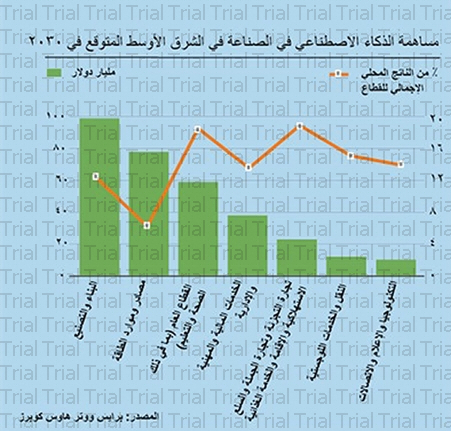

شخصيًا، إنني متحمّس للغاية لرؤية التغييرات التي ستحدثها التكنولوجيا في المستقبل القريب، إلا أنه يجب أن يتم ذلك على نحو صحيح، بمعنى أنه يتعيّن علينا أن نقوم بتثقيف الناس حول الجوانب الأخلاقية للأمور التي تمس خصوصياتهم، إذ تتركز معظم المخاوف الشائعة اليوم حول الأساليب الخفية التي يمكن أن تتطفل بها التكنولوجيا ومشغلوها على حياة الناس اليومية. لقد شهدنا على مر التاريخ الكثير من المغالطات وعدم الإدراك للمفهوم الصحيح، لكننا اليوم للمرة الأولى التي نقوم فيها بالاستعانة بالتكنولوجيا لتدير العمل المعرفي لنا. فعلى سبيل المثال، تقوم العديد من البنوك والمؤسسات المالية باتخاذ الكثير من القرارات عبر عمليات حسابية صارمة يمكن أتمتتها بالكامل باستخدام الذكاء الصناعي، وهو الأمر الذي من شأنه أن يحقق مستوى عاليًا من الكفاءة في العمليات بالنسبة للشركات والمشاريع التجارية. اليوم، ينصح المنتدى الاقتصادي العالمي الباحثين عن العمل ومسؤولي التوظيف بالتركيز على مجالات الذكاء العاطفي ومهارات التعامل مع الآخرين، عوضًا عن التركيز على المهام التي تطلب جهدًا كبيرًا، والتي ربما تكون موضع تقدير إلا أنها سرعان ما سوف تنتقل للآلات للقيام بها. حاليًا هناك العديد من المهام التي تتطلب قدرًا بسيطًا من الجهد، وعليه يقوم أصحاب الأعمال باستبدال الموظف بالآلة. من الناحية الأخلاقية، أنا لا أحبّذ ذلك إلا إذا تم نقل هذا الموظف إلى دائرة أخرى في الشركة. لتبني مثل تقنية الذكاء الاصطناعي، تلزمنا خطة متكاملة لتعزيز مهارات الأشخاص وإعادة توظيفهم